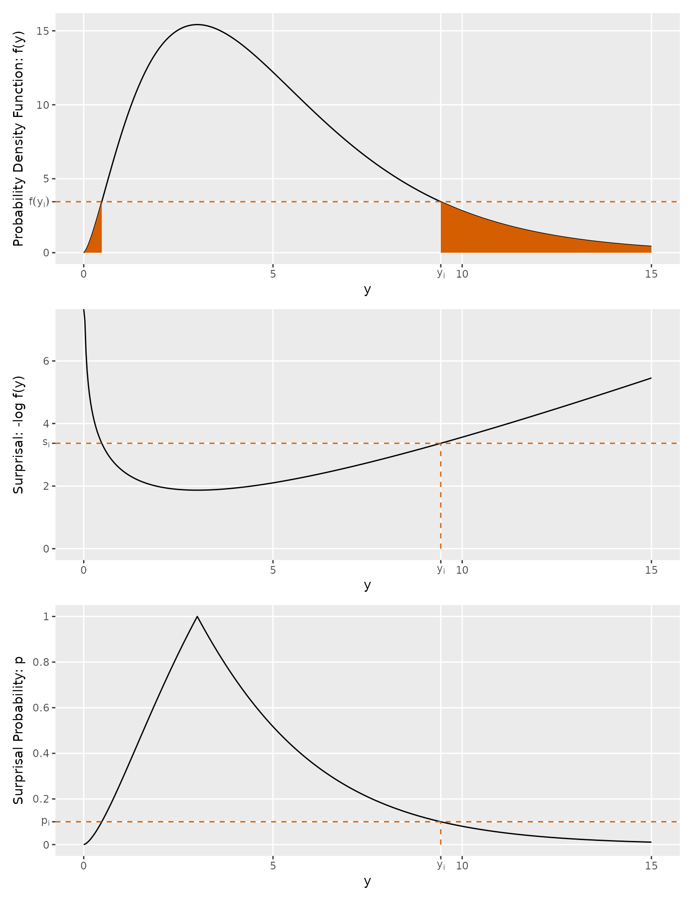
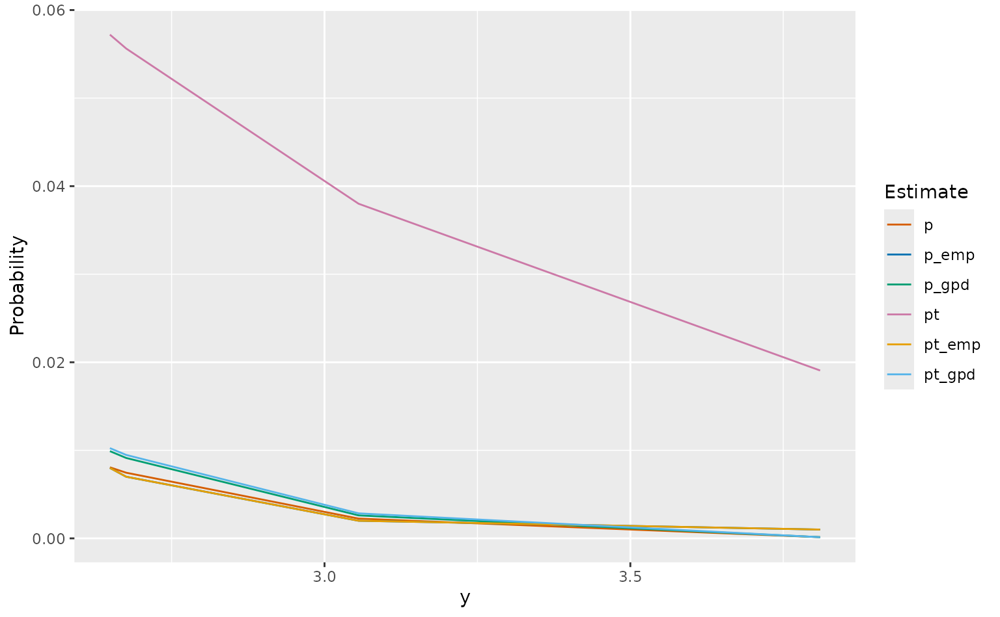
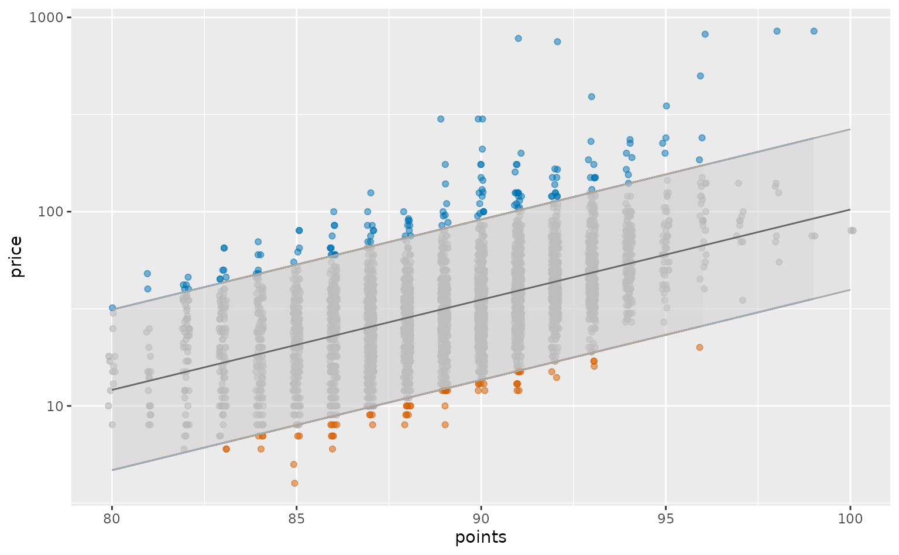
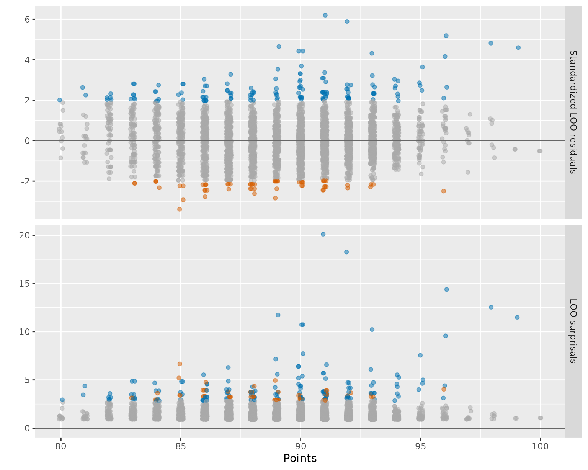
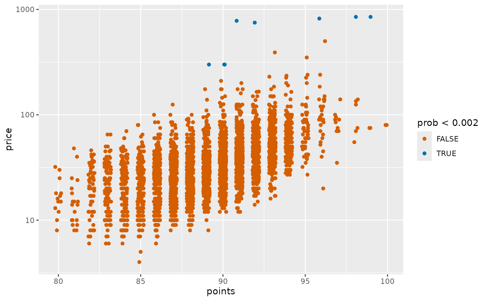
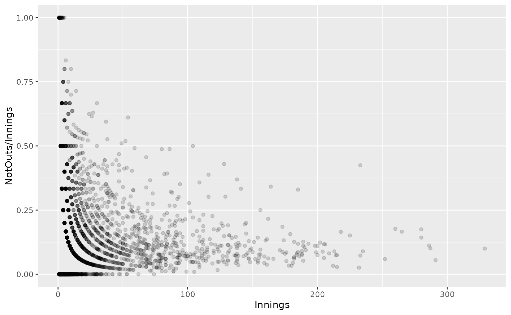
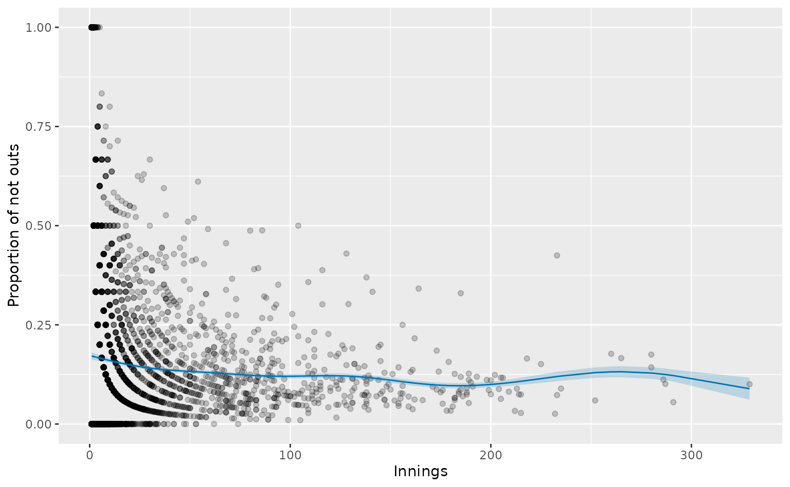
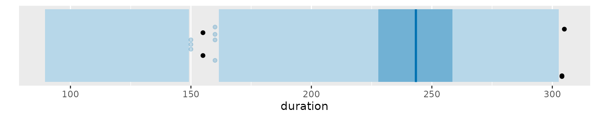
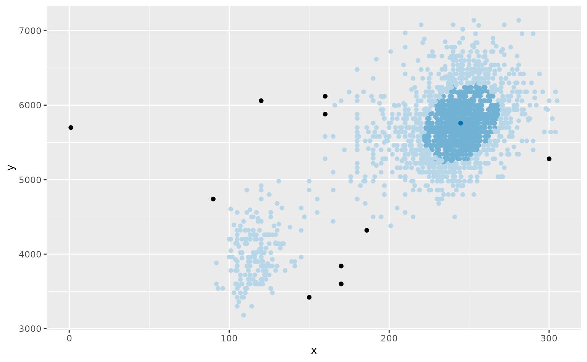

6 Density-based methods
Anomalies are observations that are unlikely to have come from the same distribution as the rest of the data. One method to identify anomalies is to first estimate the probability distribution of the data, and then find observations that are improbable under that distribution. This is the approach taken by density-based methods, where anomalies are defined as observations with low probability.
Any density-based method of anomaly detection first requires that we have a density estimate at each observation, which we will denote by f(\bm{y}_i). This may be an assumed density, or estimated from the data; it may be a parametric function, or a nonparametric estimate; it may be a conditional density or a marginal density. Wherever it comes from, we will treat f as an appropriate probability density function for the data set. When \bm{y}_i takes values on a discrete space (such as the integers), then f is a probability mass function, but we will call it a “density” for convenience when discussing methods that can apply to both discrete and continuous data. In many cases, f(\bm{y}_i) is the estimated likelihood of the observation from a given model.
6.1 Surprisals
“Surprisal” is a term coined by American engineer Myron Tribus (1961) in the context of information theory. In the statistical literature it is better known as a “log score”. But since we are considering anomaly detection, “surprisal” seems a more appropriate word to use here.
The surprisal of an observation \bm{y}_i, is defined as s_i = -\log f(\bm{y}_i), \tag{6.1} measuring the surprise in seeing the observation. So it is a measure of how anomalous (or surprising) that observation is, given the density f. A large value of s_i indicates that \bm{y}_i is not a likely value, and so is a potential anomaly. On the other hand, typical values will have low surprisals. In information theory, the average surprisal is known as the entropy of a random variable (Cover and Thomas 2006; Stone 2022), and provides a measure of uncertainty.
Although the term “surprisal” may not be in common use amongst statisticians and other data scientists, the underlying idea is widely used. For example, if f is obtained from a model with parameters that need to be estimated from the data, then the sum of the surprisals is equal to minus the log likelihood of the data. Therefore, finding parameters that minimize the sum of the surprisals is equivalent to maximum likelihood estimation.
Surprisals are also commonly used in forecasting and prediction problems (where they are called log scores) to assess whether an estimated distribution f provides a good description of the future data values y (Gneiting and Katzfuss 2014). In that context, the data are thought to be a reliable reflection of the underlying processes, and once the data are observed, the surprisal is used to assess how well the estimated distribution f matches what actually happened. In this book, we are using surprisals in reverse — we assume f is a good description of the underlying processes, and then we use the surprisals to identify observations that are unlikely to have come from that distribution.
Let’s look at some specific examples.
Normal distribution
Suppose our observations come from a N(0,1) distribution, and that f denotes the corresponding density function. Then s_i = - \log\left(\frac{1}{\sqrt{2\pi}} e^{-y_i^2/2}\right) = \frac12 y_i^2 + \frac12\log(2\pi). So the surprisals are simply equal to half the squared observations plus a constant. This is easily extended to any normal distribution, showing that surprisals are equal to half the squared scaled observations plus a constant.
\chi^2 distribution
Similarly, for a \chi^2_k distribution, a surprisal is given by s_i = -\log\left(\frac{y_i^{k/2-1}e^{-y_i/2}}{2^{k/2}\Gamma(k/2)}\right) = \frac{1}{2} y_i - (k/2-1)\log(y_i) + c_k where c_k is a constant.
Poisson distribution
Surprisals can also be computed for discrete distributions. For a Poisson(\lambda) distribution, a surprisal is given by s_i = -\log\left(\frac{\lambda^{y_i} e^{-\lambda}}{y_i!}\right) = \log(y_i!) - y_i\log(\lambda) + \lambda
Multivariate standard normal distribution
The definition of a surprisal also works for multivariate distributions. For a d-dimensional N(\bm{0}, \bm{\Sigma}) distribution, a surprisal is given by s_i = -\log\left( (2\pi)^{-d/2}|\bm{\Sigma}|^{-1/2} \exp\Big\{-\frac{1}{2}\bm{y}_i'\bm{\Sigma}^{-1}\bm{y}\Big\} \right) = \frac{1}{2} \bm{y}_i'\bm{\Sigma}^{-1}\bm{y}_i + \frac{d}{2}\log(2\pi) + \frac{1}{2} \log|\bm{\Sigma}| When \bm{\Sigma} = \bm{I}, this is simply the sum of surprisals computed on each of the marginal distributions.
6.2 Surprisal probabilities
We can use surprisals to compute the probability of an observation being at least as anomalous as \bm{y}_i under the distribution f: p_i = \int f(\bm{u}) 𝟙(-\log f(\bm{u}) > s_i) d\bm{u} = \int f(\bm{u}) 𝟙(f(\bm{u}) < f(y_i)) d\bm{u}, \tag{6.2} where 𝟙(z) is an indicator function taking value 1 when z is true and 0 otherwise.
Figure 6.1 shows the calculation for a \chi^2_5 distribution.
The surprisals() function takes values of the data \bm{y}_i and returns values of either s_i or p_i (depending on the probability argument), where the assumed density f can be provided as a distribution object from the distributional package.
tibble(
y = -5:5,
s = surprisals(y, distribution = dist_normal(), probability = FALSE),
p = surprisals(y, distribution = dist_normal(), probability = TRUE)
)#> # A tibble: 11 × 3
#> y s p
#> <int> <dbl> <dbl>
#> 1 -5 13.4 0.000000573
#> 2 -4 8.92 0.0000633
#> 3 -3 5.42 0.00270
#> 4 -2 2.92 0.0455
#> 5 -1 1.42 0.317
#> 6 0 0.919 1.00
#> 7 1 1.42 0.317
#> 8 2 2.92 0.0455
#> 9 3 5.42 0.00270
#> 10 4 8.92 0.0000633
#> 11 5 13.4 0.000000573The default value of the probability argument is TRUE.
The value of p_i is the probability of an observation being at least as anomalous as \bm{y}_i if the observations come from the distribution f. So if we label points as anomalous when p_i < \alpha, we will have a false positive rate of \alpha.
Connection to Highest density regions
Surprisal probabilities are related to highest density regions discussed in Section 2.5 and Section 3.4. If \bm{y}_i lies on the boundary of the 100(1-\alpha)\% highest density region, then p_i = 1-\alpha. This should be clear by comparing Equation 6.2 with Equation 3.1.
Connection to z-scores
For any symmetric univariate distribution, p_i = 2[1 - F(c+|y_i-c|)], where F is the corresponding distribution function centered at c. Therefore, under the Normal distribution N(\mu, \sigma^2), p_i = 2[1-\Phi(|y_i-\mu|/\sigma)], where \Phi is the standard Normal distribution function.
This shows that when f is a Normal density, identifying anomalies as observations with p_i < \alpha is equivalent to a z-score test (Section 4.2) with the threshold set to the 1-\alpha/2 quantile of the standard Normal distribution.
LOO surprisals
If the density f has been estimated from the data, then there is a problem of circular reasoning. Any genuine anomalies may affect the estimated density, and then they may not appear to be anomalies. Therefore, it is sometimes useful to consider the leave-one-out (LOO) estimate given by f_{-i}. That is, f_{-i} is the density estimate using all observations other than the ith observation. Then an unusual observation can’t influence the density estimate, giving us a better measure of how anomalous it really is. In this case, we will call the associated surprisal, a “LOO surprisal”, given by s_i = -\log f_{-i}(\bm{y}_i).
The surprisals() function has a loo argument for specifying whether we want LOO surprisals used in the computation.
Approximate GPD surprisal probabilities
If we do not know what the distribution of the data should be, or if we think our assumed distribution is incorrect for some reason, there are some ways to find approximate surprisal probabilities that are still accurate even when the assumed distribution is not.
Let f^* denote the assumed (and possibly incorrect) density function. It might be a poor estimate of the true density, or it might just be a density on the same sample space as the data. Using this assumed density, we can compute the surprisals, s_i = -\log f^*(\bm{y}_i).
Then we can fit a Generalized Pareto Distribution (GPD) to the largest surprisals using the POT approach discussed in Section 2.8. Even when f^* is incorrect or poorly estimated, the extreme surprisals will still follow a Generalized Pareto Distribution.
Let \beta denote the tail probability used in the GPD threshold, and let u denote the 1-\beta sample quantile of the surprisal values. For example, \beta = 0.1 is a common choice, and then u is the 90^{\text{th}} percentile of the s_i values. We estimate a GPD distribution using the surprisals above u, and then compute the approximate surprisal probability of each observation with s_i>u by \hat{p}_i = \beta\int_{s_i}^\infty \hat g(s) ds, \tag{6.3} where \hat g() denotes the estimated GPD density function. This approximation only gives us surprisal probabilities for the surprisals above the threshold u. For any s_i \le u, all we can say is that \hat{p}_i \ge \beta.
Need some theory here
What can we say about the quality of the approximation for those surprisals above u?
Is it true that the FTG theorem holds for all surprisal values, or do we need conditions on f?
e.g., if the surprisal ranks under f and f^* are equal, I think this should work ok. That should be true for any distribution where u is greater than the largest mode of f.
The approach does require a relatively large number of surprisals to be available, in order to adequately estimate the GPD from the top \beta of the observations. So we would normally need at least a few hundred observations to start with.
The surprisals() function has an approximation argument for specifying if we want to use the GPD approximation in computing surprisal probabilities. The argument threshold_probability is used to specify \beta, with the default value of 0.1.
Approximate empirical surprisal probabilities
An alternative approach that does not require a GPD is to estimate p_i as the proportion of surprisals larger than s_i. For large n, this provides a quick and convenient estimate of p_i that is accurate even when the assumed distribution f^* is not. Suppose f is the true (unknown) density, and f^* is the assumed (possibly incorrect) density. This approach can work well for moderate values of p_i, but we need a large number of available surprisals in order to estimate small values of p_i.
Need some theory here
What can we say about the quality of the approximation?
If the surprisal ranks under f and f^* are equal, this is obviously ok. That should be true in the tails of any distribution — i.e., when y_i is greater than the largest mode of f, or less than the smallest mode of f.
Can we say anything else?
The approximation argument of surprisals() can also be used to specify if we want to use the empirical surprisal probabilities.
Example: Standard normal values
For example, consider the 1000 values contained in the first column of n01. These were generated from a standard Normal distribution. We can use surprisals() to identify anomalies with probability less than 1%. This is equivalent to z-scores greater than 2.576 in absolute value.
We will use all three methods described above, first using the correct density in computing the surprisals, and then repeating the calculation using an incorrect density. For the incorrect density, we will use a t_3 distribution, which has much longer tails than the true N(0,1) distribution.
# Compute surprisal probabilities of v1 assuming a standard Normal distribution
# and a t4 distribution
norm_prob <- tibble(
y = n01$v1,
p = surprisals(y, distribution = dist_normal()),
p_gpd = surprisals(y, distribution = dist_normal(), approximation = "gpd"),
p_emp = surprisals(y, distribution = dist_normal(), approximation = "empirical"),
pt = surprisals(y, distribution = dist_student_t(4)),
pt_gpd = surprisals(y, distribution = dist_student_t(4), approximation = "gpd"),
pt_emp = surprisals(y, distribution = dist_student_t(4), approximation = "empirical")
)
norm_prob |> arrange(p)#> # A tibble: 1,000 × 7
#> y p p_gpd p_emp pt pt_gpd pt_emp
#> <dbl> <dbl> <dbl> <dbl> <dbl> <dbl> <dbl>
#> 1 3.81 0.000139 0.000135 0.001 0.0191 0.000132 0.001
#> 2 3.06 0.00225 0.00261 0.002 0.0380 0.00284 0.002
#> 3 -3.01 0.00263 0.00308 0.003 0.0398 0.00334 0.003
#> 4 -3.00 0.00273 0.00320 0.004 0.0402 0.00346 0.004
#> 5 -2.94 0.00328 0.00389 0.005 0.0425 0.00418 0.005
#> 6 -2.89 0.00387 0.00461 0.006 0.0448 0.00492 0.006
#> 7 2.68 0.00746 0.00913 0.007 0.0556 0.00948 0.007
#> 8 2.65 0.00807 0.00991 0.008 0.0572 0.0102 0.008
#> 9 -2.60 0.00943 0.0116 0.009 0.0604 0.0119 0.009
#> 10 -2.59 0.00953 0.0118 0.01 0.0607 0.0121 0.01
#> # ℹ 990 more rowsThe most accurate values are in column p, as this uses the correct distribution applied to the correct surprisals. Notice that p_gpd and p_emp are both relatively accurate: the GPD and empirical approximations work. For the probabilities calculated using the incorrect distribution, pt is relatively inaccurate, with much larger probabilities than they should be, especially in the extreme tails. But pt_gpd and pt_emp are both reasonable estimates, despite being based on an incorrect distribution for computing the surprisals. In fact, p_emp and pt_emp are identical, because the ordering of the surprisals is unchanged despite the incorrect distribution being used.
The various estimates are displayed in Figure 6.2 for values of y greater than 2.5, showing how the estimates (other than pt) are particularly accurate in the extreme tails, where we need them for anomaly detection.
Code
norm_prob |>
filter(y > 2.5) |>
tidyr::pivot_longer(p:pt_emp, names_to = "Estimate", values_to = "Probability") |>
ggplot(aes(x = y, y = Probability, col = Estimate)) +
geom_line()

In summary, even when we don’t know the distribution of the data, we can use some incorrect assumed distribution to compute the surprisals, and then apply either a GPD or the empirical distribution to obtain good estimates of the surprisal probabilities.
6.3 Linear regression surprisals
Suppose we want to find anomalies amongst n univariate observations y_1,\dots,y_n, and we have p variables that we think might be useful for predicting y. Then we can write the conditional density as f(y \mid \bm{x}), where \bm{x} is a p-dimensional vector of predictor variables. Anomalies in y are identified as observations that are unlikely to have come from the conditional density f. This is commonly called a “regression model”, regardless of the form of f, or whether the relationship with \bm{x} is linear or not.
By far the most common type of regression model assumes that f is a Normal distribution, and that the conditional mean is a linear function of \bm{x}. Note that this does not mean that y is Normally distributed, or that \bm{x} has a Normal distribution. The assumption is that the conditional distribution of y given \bm{x} is Normal, which can easily be checked by looking at the residuals from the regression model.
For a linear Normal regression model, with independent observations and homoscedastic errors, the conditional distribution is given by y \mid \bm{x} \sim N(\bm{x}_+'\bm{\beta}, \sigma^2), \tag{6.4} where \bm{x}_+ = [1, \bm{x}]' is a (p+1)-dimensional vector containing a 1 in the first position and the predictors in the remaining positions, and \bm{\beta} is a (p+1)-dimensional vector of regression coefficients.
Model estimation
The model can be written in matrix form as \bm{y} \sim N(\bm{X}\bm{\beta}, \sigma^2\bm{I}), where \bm{X} is an n\times(p+1) matrix with the first column being a vector of 1s, and the other columns containing the predictor variables, or equivalently as \bm{\varepsilon} = \bm{y} - \bm{X}\bm{\beta} \sim N(\bm{0}, \sigma^2\bm{I}). \tag{6.5} Provided \bm{X} is of rank p+1, and the errors \bm{\varepsilon} are independent of \bm{X}, the model can be estimated using ordinary least squares regression (Seber and Lee 2003), resulting in the estimate \hat{\bm{\beta}} = (\bm{X}'\bm{X})^{-1}\bm{X}'\bm{y}. The fitted values (i.e., predicted values for the training data) are given by \hat{\bm{y}} = \bm{X}\hat{\bm{\beta}} = \bm{H}\bm{y}, where \bm{H} = \bm{X}(\bm{X}'\bm{X})^{-1}\bm{X}' is known as the “hat”-matrix because it creates the “y-hat” values \hat{\bm{y}} from the data \bm{y}.
The diagonals of \bm{H}, given by h_1,\dots,h_n, take values between 0 and 1. These are known as the “leverage” values (Faraway 2014, p69), and measure how much each observation influences the corresponding fitted value. High leverage values (close to 1) correspond to observations that have a large influence on the estimated coefficients, and so leaving those observations out will lead to very different values for the fitted values and residuals. On the other hand, small leverage values (close to 0) correspond to observations that have little influence on the estimated coefficients, and so leaving those observations out will lead to similar values for the fitted values and residuals.
Residuals
The residuals from the model are given by \bm{e} = \bm{y} - \hat{\bm{y}} = (\bm{I} - \bm{H})\bm{y}. \tag{6.6} Note that the residuals have the distribution \bm{e}\mid\bm{X} \sim N(\bm{0}, \sigma^2(\bm{I} - \bm{H})), which is not quite the same as the distribution of the errors given by Equation 6.5. However, as n\rightarrow\infty, \bm{H}\rightarrow\bm{I}, so the two distributions are asymptotically equivalent. Often, we need standardized residuals, which are obtained by dividing each residual by its estimated standard deviation, giving r_i = \frac{e_i}{\hat{\sigma}\sqrt{1-h_i}}, \qquad i = 1,\dots, n, where \hat\sigma^2 = \frac{1}{n-p-1}\sum_{i=1}^n e_i^2 \tag{6.7} is the estimated residual variance.
A linear model can be estimated in R using the stats::lm() function. The broom::augment() function will compute the residuals (named .resid), the standardized residuals (named .std.resid), and the leverage values (names .hat).
The surprisals under the Gaussian linear regression model Equation 6.4 can be estimated using these standardized residuals, giving
s_i = -\log\phi(r_i),
\tag{6.8} where \phi(u) = (2\pi)^{-1/2}e^{-u^2} is the standard normal density. This can be computed as follows, assuming that fit is the output from stats::lm().
broom::augment(fit) |>
mutate(surprisals = -dnorm(.std.resid, log = TRUE))Equivalently, the surprisals() function will compute them:
surprisals(fit, probability = FALSE)LOO residuals
The leave-one-out residual for the ith observation is defined as the difference between \bm{y}_i and the predicted value obtained using a model fitted to all observations except the ith observation. In this context, LOO residuals are often called PRESS (prediction error sum of squares) residuals. At first, it appears that calculating LOO residuals involves a lot of computation — estimating n separate models. However, the leave-one-out residuals are easily obtained without actually having to re-estimate the model many times. It can be shown (Montgomery, Peck, and Vining 2012, Appendix C.7) that the leave-one-out (LOO) residuals are given by e_{-i} = e_{i}/(1-h_{i}), \tag{6.9} where e_{i} is the residual obtained from fitting the model to all observations.
The variance of e_{-i} is given by
\frac{\text{Var}(e_i)}{(1-h_i)^2} = \frac{\sigma^2}{1-h_i},
so we can standardize each LOO residual to obtain
\frac{e_i / (1-h_i)}{\sigma/\sqrt{1-h_i}} = \frac{e_i}{\sigma \sqrt{1-h_i}}
To avoid any anomalies affecting the estimate of \sigma, we consider again the leave-one-out models. If we leave out the ith observation, and fit a regression model to the remaining observations, then the estimated variance of the residuals is given by (Montgomery, Peck, and Vining 2012, Appendix C.8)
\hat\sigma_{-i}^2 = \frac{1}{n-p-2}\left[(n-p-1)\hat\sigma^2 - e_{i}^2/(1-h_i)\right],
\tag{6.10} where \hat\sigma^2 is given by Equation 6.7. These are computed by broom::augment() and are returned in the column .sigma. Thus the standardized LOO residuals (also known as “externally studentized residuals”) are given by
r_{-i} = \frac{e_i}{\hat\sigma_{-i} \sqrt{1-h_i}}.
Finally, the LOO regression surprisals are given by
s_{-i} = -\log \phi(r_{-i})
\tag{6.11}
If fit is the output from stats::lm(), then these quantities can be computed as follows.
broom::augment(fit) |>
mutate(
std_loo_res = .resid / (.sigma * sqrt(1 - .hat)),
loo_surprisals = -log(dnorm(std_loo_res, log = TRUE))
)More simply, we can just use the surprisals() function again:
surprisals(fit, type = "loo", probability = FALSE)Example: Shiraz reviews
For example, consider the wine reviews of Shiraz (aka Syrah), plotted in Figure 1.6. We can fit a linear regression model to these data to obtain a conditional density estimate of price given the points awarded to each wine. Then, \bm{X} contains just two columns: a column of 1s, and a column containing the points values. The vector \bm{y} contains the log prices of the wines. The model can be fitted as follows.
wine_reviews <- fetch_wine_reviews()shiraz <- wine_reviews |> filter(variety %in% c("Shiraz", "Syrah"))
fit_wine <- lm(log(price) ~ points, data = shiraz)
summary(fit_wine)#>
#> Call:
#> lm(formula = log(price) ~ points, data = shiraz)
#>
#> Residuals:
#> Min 1Q Median 3Q Max
#> -1.6407 -0.3361 -0.0109 0.3052 2.9909
#>
#> Coefficients:
#> Estimate Std. Error t value Pr(>|t|)
#> (Intercept) -6.05913 0.20731 -29.2 <2e-16 ***
#> points 0.10690 0.00232 46.0 <2e-16 ***
#> ---
#> Signif. codes: 0 '***' 0.001 '**' 0.01 '*' 0.05 '.' 0.1 ' ' 1
#>
#> Residual standard error: 0.485 on 4494 degrees of freedom
#> Multiple R-squared: 0.32, Adjusted R-squared: 0.32
#> F-statistic: 2.12e+03 on 1 and 4494 DF, p-value: <2e-16The fitted model can be written as \log(\text{Price}) \sim N(-6.059 + 0.107 \times \text{Points}, 0.485^2), and is depicted in Figure 6.3 with 95% prediction intervals.
Code
wine_aug <- broom::augment(fit_wine, data = shiraz, interval = "prediction") |>
mutate(
lwr = exp(.lower),
upr = exp(.upper),
location = case_when(
price < lwr ~ "below",
price > upr ~ "above",
TRUE ~ "within"
)
)
wine_aug |>
ggplot(aes(y = price, x = points, col = location)) +
geom_jitter(height = 0, width = 0.1, alpha = 0.5) +
geom_ribbon(aes(ymin = lwr, ymax = upr), fill = "#cccccc", alpha = 0.25) +
geom_line(aes(y = exp(.fitted)), color = "#666666") +
scale_y_log10() +
guides(fill = "none", col = "none") +
scale_color_manual(values = c("#0072B2", "#D55E00", "#AAAAAA"))

The LOO surprisals obtained from this model are shown in Figure 6.4, using the same colors as Figure 6.3 to indicate whether the observation is below, within, or above, the 95% prediction interval.
Code
wine_aug <- wine_aug |>
mutate(
std_loo_res = .resid / (.sigma * sqrt(1 - .hat)),
surprisals = -dnorm(.std.resid, log = TRUE),
loo_surprisals = -dnorm(std_loo_res, log = TRUE)
)
wine_aug |>
select(points, std_loo_res, loo_surprisals, location) |>
tidyr::pivot_longer(c(std_loo_res, loo_surprisals), names_to = "variable", values_to = "value") |>
mutate(variable = factor(variable,
levels = c("std_loo_res", "loo_surprisals"),
label = c("Standardized LOO residuals", "LOO surprisals")
)) |>
ggplot(aes(x = points, y = value, col = location)) +
facet_grid(variable ~ ., scales = "free_y") +
geom_jitter(height = 0, width = 0.1, alpha = 0.5) +
geom_hline(yintercept = 0, color = "#666666") +
labs(x = "Points", y = "") +
guides(fill = "none", col = "none") +
scale_color_manual(values = c("#0072B2", "#D55E00", "#AAAAAA"))

The over-priced wines under this model are shown in blue, while the under-priced wines are shown in orange. This shows that the most anomalous observations are the two with LOO surprisals above 17, and studentized residuals close to 6. The largest LOO surprisal is for the most over-priced wine (under this model), a 2009 Shiraz from the Henschke winery in the Eden Valley region of South Australia, with 91 points and a price of $780.
wine_aug |>
filter(loo_surprisals == max(loo_surprisals)) |>
select(country:winery, year, points, price, std_loo_res, loo_surprisals)#> # A tibble: 1 × 9
#> country state region winery year points price std_loo_res loo_surprisals
#> <chr> <chr> <chr> <chr> <dbl> <dbl> <dbl> <dbl> <dbl>
#> 1 Australia South… Eden … Hensc… 2009 91 780 6.20 20.1The largest LOO surprisal corresponding to an under-priced wine is for the wine with the lowest residual value, with 85 points and a price of $4. Another good buy, at the higher quality end, is the 2007 Syrah from the Rulo winery in the Columbia Valley in Washington State, USA:
wine_aug |>
filter(points > 95) |>
filter(std_loo_res == min(std_loo_res)) |>
select(country:winery, year, points:price, std_loo_res, loo_surprisals)#> # A tibble: 1 × 9
#> country state region winery year points price std_loo_res loo_surprisals
#> <chr> <chr> <chr> <chr> <dbl> <dbl> <dbl> <dbl> <dbl>
#> 1 US Washing… Colum… Rulo 2007 96 20 -2.49 4.03This corresponds to the only orange point in Figure 6.3 that has a point value above 95 and a price below the 95% prediction interval.
Surprisal probabilities
We will compute the surprisal probabilities using the empirical approximation.
wine_aug |>
mutate(prob = rank(-loo_surprisals) / NROW(wine_aug)) |>
select(country:winery, year, points, price, loo_surprisals, prob) |>
arrange(prob)#> # A tibble: 4,496 × 9
#> country state region winery year points price loo_surprisals prob
#> <chr> <chr> <chr> <chr> <dbl> <dbl> <dbl> <dbl> <dbl>
#> 1 Australia South Au… Eden … Hensc… 2009 91 780 20.1 2.22e-4
#> 2 US Californ… Centr… Law 2013 92 750 18.3 4.45e-4
#> 3 Australia South Au… Eden … Hensc… 2010 96 820 14.4 6.67e-4
#> 4 Australia South Au… South… Penfo… 2008 98 850 12.5 8.90e-4
#> 5 Italy Tuscany Tosca… Tua R… 2011 89 300 11.7 1.11e-3
#> 6 Australia South Au… South… Penfo… 2010 99 850 11.5 1.33e-3
#> 7 Italy Tuscany Tosca… Tua R… 2013 90 300 10.7 1.67e-3
#> 8 Italy Tuscany Tosca… Tua R… 2012 90 300 10.7 1.67e-3
#> 9 France Rhône Va… Côte … Domai… 2013 93 391 10.2 2.00e-3
#> 10 Australia South Au… South… Penfo… 2004 96 500 9.57 2.22e-3
#> # ℹ 4,486 more rowsThose with the ten smallest surprisal probabilities are all wines that appear to be over-priced given their points values.
The preceding analysis shows the calculations of surprisal probabilities in detail. They can be more simply computed using surprisals() as follows.
shiraz <- shiraz |>
mutate(prob = surprisals(fit_wine, approximation = "empirical"))
shiraz |>
select(country:winery, year, points, price, prob) |>
arrange(prob)#> # A tibble: 4,496 × 8
#> country state region winery year points price prob
#> <chr> <chr> <chr> <chr> <dbl> <dbl> <dbl> <dbl>
#> 1 Australia South Australia Eden Valley Hensc… 2009 91 780 2.22e-4
#> 2 US California Central Coast Law 2013 92 750 4.45e-4
#> 3 Australia South Australia Eden Valley Hensc… 2010 96 820 6.67e-4
#> 4 Australia South Australia South Australia Penfo… 2008 98 850 8.90e-4
#> 5 Italy Tuscany Toscana Tua R… 2011 89 300 1.11e-3
#> 6 Australia South Australia South Australia Penfo… 2010 99 850 1.33e-3
#> 7 Italy Tuscany Toscana Tua R… 2013 90 300 1.67e-3
#> 8 Italy Tuscany Toscana Tua R… 2012 90 300 1.67e-3
#> 9 France Rhône Valley Côte Rôtie Domai… 2013 93 391 2.00e-3
#> 10 Australia South Australia South Australia Penfo… 2004 96 500 2.22e-3
#> # ℹ 4,486 more rowsFigure 6.5 shows the relationship between points and price, with the points colored according to the surprisal probability. The eight blue points are observations with surprisal probabilities less than 0.002.
Code
shiraz |>
ggplot(aes(x = points, y = price, color = prob < 0.002)) +
geom_jitter(height = 0, width = 0.2) +
scale_y_log10()

6.4 GAM surprisals
In some applications, it is not appropriate to assume the conditional density is Gaussian, or that the relationships are linear. One useful model that allows for non-Gaussian densities, and non-linear relationships, is a generalized additive model or GAM. Under this model, the conditional density is given by (Wood 2017) y\mid\bm{x} \sim f(\mu), \qquad \ell(\mu) = \sum_{k=1}^p g_k(x_{k}), where \mu = \text{E}(y | \bm{x}) denotes the conditional mean, \ell() is a link function, and each g_k function is smooth. If f is Normal, \ell is the identity, and g_i(u) = \beta_i u, then this reduces to the linear Gaussian model (Equation 6.4).
Consider the number of “not outs” for each batter in the cricket_batting data set. A “not out” occurs when a batsman has not been dismissed at the end of the team’s innings. Let’s consider if there are some batters who have an unusually high proportion of not outs. The data set contains results from 91022 innings, of which 11883 were not outs. So the overall proportion of not outs is 11883 / 91022 = 0.131.
Figure 6.6 shows the proportion of not outs for each batter as a function of the number of innings they played. The unusual patterns on the left of each plot is due to the discrete nature of the data — both the number of not outs and the number of innings must be integers. There is some overplotting that occurs due to batters having the same numbers of not-outs and innings, which results in the higher color density of the corresponding plotted points. Batters who have played only a few innings tend to have a higher proportion of not outs on average, and a higher variance, than those who have played a large number of innings.
df_no <- cricket_batting |>
filter(Innings > 0) |>
mutate(prop_no = NotOuts / Innings)
df_no |>
ggplot(aes(x = Innings, y = NotOuts / Innings)) +
geom_point(alpha = 0.15)

This suggests that we can construct a GAM for the number of not outs for each batter as a function of the number of innings they played. It is natural to use a Binomial distribution with a logit link function:
\text{NotOuts} \mid \text{Innings} \sim \text{Binomial}(n=\text{Innings},~ p),
where p denotes the probability of a batter not being dismissed in an innings, and
\log(p / (1- p)) = g(\text{Innings})
We can fit this model using the mgcv package.
fit_notouts <- mgcv::gam(prop_no ~ s(Innings),
data = df_no,
family = binomial(link = logit), weights = Innings
)
notouts_aug <- broom::augment(fit_notouts, data = df_no, type.predict = "response")
notouts_aug |>
ggplot(aes(x = Innings, y = prop_no)) +
geom_point(alpha = 0.2) +
geom_line(aes(y = .fitted), color = "#0072B2") +
geom_ribbon(
aes(
ymin = .fitted - 2 * .se.fit,
ymax = .fitted + 2 * .se.fit
),
fill = "#0072B2", alpha = 0.2
) +
labs(y = "Proportion of not outs")

Now we can use the fitted model to compute the surprisals from the Binomial distribution, and find the most anomalous batters. Unfortunately, there is not a convenient way to compute LOO surprisals for GAM models, so we will only consider regular surprisals in this example. While the Binomial distribution is probably a good first approximation, it does assume that the probability of a batter being dismissed does not change over their career, which is an unlikely assumption as it does not allow for the development of skill, the value of experience, or the effect of ageing. So we will use the GPD approximation to compute the surprisal probabilities.
notouts_aug <- notouts_aug |>
mutate(
surprisals = surprisals(fit_notouts, probability = FALSE),
prob = surprisals(fit_notouts, approximation = "gpd")
) |>
select(Player:Country, Innings:NotOuts, prop_no:.fitted, surprisals:prob) |>
arrange(desc(surprisals))
notouts_aug#> # A tibble: 3,702 × 8
#> Player Country Innings NotOuts prop_no .fitted surprisals prob
#> <chr> <chr> <int> <int> <dbl> <dbl> <dbl> <dbl>
#> 1 JM Anderson England 233 99 0.425 0.120 71.3 3.10e-4
#> 2 CS Martin New Ze… 104 52 0.5 0.121 47.1 7.32e-4
#> 3 RGD Willis England 128 55 0.430 0.121 40.8 9.88e-4
#> 4 CA Walsh West I… 185 61 0.330 0.0965 40.7 9.91e-4
#> 5 TA Boult New Ze… 86 42 0.488 0.121 37.1 1.20e-3
#> 6 M Muralitharan ICC/Sr… 164 56 0.341 0.102 36.8 1.22e-3
#> 7 EJ Chatfield New Ze… 54 33 0.611 0.131 36.0 1.28e-3
#> 8 BS Chandrasekhar India 80 39 0.488 0.123 34.1 1.43e-3
#> 9 GD McGrath Austra… 138 51 0.370 0.118 31.8 1.65e-3
#> 10 M Ntini South … 116 45 0.388 0.122 29.1 1.99e-3
#> # ℹ 3,692 more rowsThe most anomalous batters are all “tail-enders” (i.e., not skilled batters) who played for a long time (so they have a large number of innings). Because they batted last, or nearly last, they are more likely to be not out at the end of the team’s innings.
The .fitted value is the expected proportion of not outs for each player given the number of innings they have played, while prop_no gives the actual proportion of not outs they have had. The largest surprisal is for English batter Jimmy Anderson, who has had 99 not outs in 233 innings, which is much higher than the expected number of not outs of 233 \times 0.120 = 27.9. This anomaly is also seen in Figure 6.7, as being somewhat unusual for that part of the data. Although Jimmy Anderson was not a great batter, he was good at defence, and was able to bat for a long time without being dismissed, leaving the other batter time to score runs.
We have identified an anomaly that is not anomalous in the proportion of not-outs, or in the number of innings, and the difference between the actual proportion and the predicted proportion is not anomalous either compared to some of the other values. However, because we have used a statistical model, we have been able to account for the particular features of this data set, such as the discrete nature of the data, and the changing variance, to identify an observation that is anomalous in the context of the model.
6.5 KDE surprisals
Suppose, instead of a regression or a GAM, we estimate f using a kernel density estimate. In fact, when the surprisals() functions is applied to data without specifying a probability distribution, a kernel density estimate of the data is used by default. The kernel density estimate at each observation is (Equation 3.4)
f_i = \hat{f}(\bm{y}_i) = \frac{1}{n} \sum_{j=1}^n K_H(\bm{y}_i-\bm{y}_j),
\tag{6.12} and so the “kde surprisal” at each observation as
p_i = -\log(f_i).
The largest possible surprisal occurs when an observation has no other observations nearby. Then f_i \approx K_H(\bm{0})/n because K_H(\bm{y}_i-\bm{y}_j)\approx 0 when \|\bm{y}_i-\bm{y}_j\| is large. So the largest possible kde surprisal, when using a Gaussian kernel, is
-\log(K_H(\bm{0})/n) \approx \log(n) + \frac{d}{2}\log(2\pi) + \frac{1}{2}\text{log det}(\bm{H}),
where \bm{H} is now the bandwidth matrix. For univariate data, when d=1, this simplifies to
-\log(K_h(0)/n) \approx \log(nh\sqrt{2\pi}).
Leave-one-out kde surprisals
The contribution of the ith point to the kernel density estimate at that point is K_H(\bm{0})/n. Therefore, we can compute leave-one-out kde surprisals as f_{-i} = \left[nf_i - K_H(\bm{0})\right]/(n-1), \tag{6.13} where f_i is the kde estimate at \bm{y}_i using all data. Thus, we can compute the leave-one-out kernel surprisals without needing to re-estimate the density many times.
The largest possible LOO kde surprisal is infinite, occuring when there are no observations nearby, so that nf_i = K_H(\bm{0}).
The lookout algorithm
The “lookout” algorithm (standing for Leave-One-Out Kernel density estimates for OUTlier detection) was proposed by Kandanaarachchi and Hyndman (2022) and uses surprisal probabilities based on a GPD approximation. Unlike the KDE implementation used in this book, it uses a method of bandwidth selection based on topological data analysis. Probabilities obtained using this algorithm can be calculated using the lookout_prob() function.
Example: Old Faithful eruption durations
For the Old Faithful eruption duration data, we obtain the following results.
of_surprisals <- oldfaithful |>
mutate(
loo_kde_surprisal = surprisals(duration, loo = TRUE, probability = FALSE),
prob = surprisals(duration, loo = TRUE),
)
of_surprisals |> arrange(desc(loo_kde_surprisal))#> # A tibble: 2,261 × 5
#> time duration waiting loo_kde_surprisal prob
#> <dttm> <dbl> <dbl> <dbl> <dbl>
#> 1 2015-12-07 00:09:00 7200 3420 Inf 0
#> 2 2018-04-25 19:08:00 1 5700 Inf 0
#> 3 2020-10-25 16:31:00 305 6060 7.66 0.00502
#> 4 2015-03-07 00:50:00 160 5281 7.57 0.00601
#> 5 2019-03-14 22:43:00 160 5580 7.57 0.00601
#> 6 2020-09-15 18:01:00 160 5880 7.57 0.00601
#> 7 2020-09-16 14:44:00 160 6120 7.57 0.00601
#> 8 2020-05-07 22:55:00 304 6180 7.54 0.00854
#> 9 2020-05-21 00:27:00 304 5640 7.54 0.00854
#> 10 2017-09-01 01:18:00 155 4560 7.54 0.00919
#> # ℹ 2,251 more rowsThe two infinite LOO surprisals correspond to the extreme 2 hour duration, and the tiny 1 second duration. These are so improbable given the rest of the data, that the scores are effectively infinite. The prob column contains the LOO surprisal probabilities based on the KDE.
If we omit the two extreme values, we obtain different results.
of_surprisals <- oldfaithful |>
filter(duration > 1, duration < 7000) |>
mutate(
loo_kde_surprisal = surprisals(duration, loo = TRUE, probability = FALSE),
prob = surprisals(duration, loo = TRUE),
)
of_surprisals |> arrange(desc(loo_kde_surprisal))#> # A tibble: 2,259 × 5
#> time duration waiting loo_kde_surprisal prob
#> <dttm> <dbl> <dbl> <dbl> <dbl>
#> 1 2020-10-25 16:31:00 305 6060 8.11 0.00412
#> 2 2017-09-01 01:18:00 155 4560 8.01 0.00464
#> 3 2017-09-07 04:56:00 155 4740 8.01 0.00464
#> 4 2020-05-07 22:55:00 304 6180 8.01 0.00467
#> 5 2020-05-21 00:27:00 304 5640 8.01 0.00467
#> 6 2015-03-07 00:50:00 160 5281 7.93 0.00734
#> 7 2019-03-14 22:43:00 160 5580 7.93 0.00734
#> 8 2020-09-15 18:01:00 160 5880 7.93 0.00734
#> 9 2020-09-16 14:44:00 160 6120 7.93 0.00734
#> 10 2015-11-21 20:27:00 150 3420 7.91 0.00787
#> # ℹ 2,249 more rowsNow there are five points with probabilities less than 0.005, two at 155, and three above 300.
Figure 6.8 shows an HDR boxplot of the data (other than the maximum), with those points with surprisal probabilities less than 0.005 highlighted in black.
oldfaithful |>
filter(duration > 1, duration < 7000) |>
gg_hdrboxplot(duration)

The same algorithm is easily applied in two dimensions. For example, we can consider the bivariate distribution of Duration and Waiting time, ignoring those observations that are greater than 2 hours in either dimension.
of <- oldfaithful |>
select(duration, waiting) |>
filter(duration < 7200, waiting < 7200)
of |>
mutate(
loo_scores = surprisals(of, loo = TRUE, probability = FALSE),
prob = surprisals(of, loo = TRUE)
) |>
filter(prob < 0.005) |>
arrange(prob, duration)#> # A tibble: 10 × 4
#> duration waiting loo_scores prob
#> <dbl> <dbl> <dbl> <dbl>
#> 1 1 5700 Inf 0
#> 2 120 6060 Inf 0
#> 3 170 3600 17.6 0.00137
#> 4 170 3840 17.3 0.00182
#> 5 150 3420 16.5 0.00228
#> 6 90 4740 16.5 0.00273
#> 7 160 6120 16.4 0.00319
#> 8 186 4320 16.3 0.00364
#> 9 300 5280 16.1 0.00410
#> 10 160 5880 16.1 0.00455Now, two anomalies are identified, with both of them having infinite LOO surprisals. We can visualize them in an HDR scatterplot, shown in Figure 6.9.
of |>
gg_hdrboxplot(duration, waiting, scatterplot = TRUE)

More examples
Let’s apply the kde surprisals method to the six examples introduced in Section 4.1. For this purpose we will use a threshold of 0.001 for the surprisal probabilities.
cricket_batting |>
filter(Innings > 20) |>
mutate(prob = surprisals(Average, loo = TRUE)) |>
filter(prob < 0.001) |>
select(Player, Average, prob)#> # A tibble: 1 × 3
#> Player Average prob
#> <chr> <dbl> <dbl>
#> 1 DG Bradman 99.9 0Here Bradman is a clear anomaly (with a very low surprisal probability), and no-one else is identified as a possible anomaly.
Next we consider some artificial examples. First, we consider the first 48 rows of the second variable in the n01 data, along with the values 4.0 and 4.5.
n01b <- tibble(y = c(n01$v2[1:48], 4, 4.5))
n01b |>
mutate(prob = surprisals(y, loo = TRUE)) |>
filter(prob < 0.05) |>
arrange(prob)#> # A tibble: 2 × 2
#> y prob
#> <dbl> <dbl>
#> 1 4.5 0.00984
#> 2 4 0.0160As expected, only the two genuine anomalies have been identified.
Finally, we consider 1000 simulated observations from each of the distributions, N(0,1), \text{t}_3 and \chi^2_4.
n01 |>
select(v1) |>
mutate(prob = surprisals(v1, loo = TRUE)) |>
filter(prob < 0.001) |>
arrange(prob, v1)#> # A tibble: 1 × 2
#> v1 prob
#> <dbl> <dbl>
#> 1 3.81 0.000675set.seed(1)
tibble(y = rt(1000, df = 3)) |>
mutate(prob = surprisals(y, loo = TRUE)) |>
filter(prob < 0.001) |>
arrange(prob, y)#> # A tibble: 4 × 2
#> y prob
#> <dbl> <dbl>
#> 1 -11.4 0
#> 2 10.5 0
#> 3 7.65 0.000637
#> 4 -7.40 0.000939tibble(y = rchisq(1000, df = 4)) |>
mutate(prob = surprisals(y, loo = TRUE)) |>
filter(prob < 0.001) |>
arrange(prob, y)#> # A tibble: 1 × 2
#> y prob
#> <dbl> <dbl>
#> 1 17.0 0.000483The algorithm has found a small number of spurious anomalies in each case, out of the 1000 observations included. Notably, the results do not appear to deteriorate with the heavier-tailed or skewed distributions.